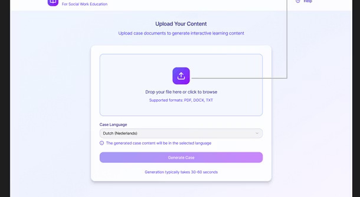
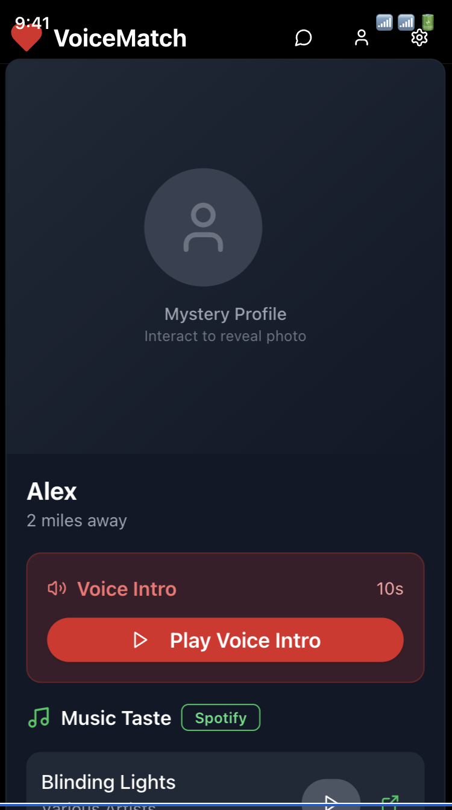

I design and build digital experiences that combine
strong visual identity with practical front-end development.
I like interfaces that feel intentional, sharp and personal.
My work moves between UX/UI, web development,
interaction and visual experimentation.
UX / UIFRONT-ENDDIGITAL DESIGN
CLEAN CODE.
Loud identity.
NO BORING WEBSITES.
CURRENTLY / INTERNATIONAL MINOR
FONTYS / 2026
CHINA AND THE WORLD ECONOMY
FONTYS × SHANGHAI
EINDHOVENSHANGHAI
RESEARCHTECHNOLOGYCOLLABORATION
International collaboration / research in progress
SELECTED WORK / ARCHIVE
PROJECTS
Selected development and design work.
Different ideas, one evolving creative direction.
GORHIM
RESTAURANTMENU / LOCATIONDIGITAL EXPERIENCE
GORHIM / DIGITAL EDITION
REACT / CLIENT WEBSITE
RESTAURANT
GORHIM
React / Vite / CSS / JavaScript
A restaurant website that gives Gorhim a contemporary digital identity while helping visitors find the menu and essential information across screen sizes.
PROJECT AT A GLANCE
Role
Web design & front-end development
Type
Restaurant website
Tools
React · Vite · CSS · JavaScript
PROJECT OVERVIEW
Gorhim’s website gives the restaurant a contemporary online presence for visitors looking for its menu and practical information. The project connects its visual identity with the everyday task of finding out what the restaurant offers.
THE CHALLENGE
A restaurant site has to communicate atmosphere while helping visitors find useful information quickly. The challenge was to give the menu and navigation a clear place in the design across different screen sizes.
DESIGN PROCESS
I worked on the site’s visual identity, menu presentation and navigation alongside its React implementation. The responsive layout adapts the presentation to different screens, keeping the restaurant’s content central to the experience.
KEY DESIGN DECISIONS
Menu presentation: give the food a clear place in the hierarchy so visitors can find the offering. Responsive layout: carry the same identity across screen sizes while keeping navigation and information accessible.
MY CONTRIBUTION
I developed the website with React and Vite, focusing on the visual presentation, responsive layout, navigation and menu content.
React · Vite · CSS · JavaScript
F40
FERRARI
1987
478 HP
INTERACTIVE 3D
AUTOMOTIVE DIGITAL ARCHIVE
THREE.JS / WEB / 3D
INTERACTIVE
FERRARI F40
HTML / CSS / JavaScript / Three.js
An interactive 3D Ferrari F40 experience that invites visitors to explore the car through movement, focused views and contextual details.
PROJECT AT A GLANCE
Role
Interaction & front-end development
Type
Interactive 3D web experience
Tools
Three.js · JavaScript · HTML · CSS
PROJECT OVERVIEW
This interactive Ferrari F40 showroom invites visitors to explore a 3D model and learn about the car’s design and engineering. The aim was to make exploration itself part of the presentation.
THE CHALLENGE
A cinematic 3D scene can be visually compelling but difficult to navigate. Visitors need recognizable ways to move from the whole car to its details without losing their sense of orientation.
DESIGN PROCESS
The experience starts with an automatically rotating model and an invitation to explore. Feature cards identify the body, engine, cockpit and chassis. Selecting a card moves the camera toward the relevant part; selecting it again returns to the overview. Paint swatches offer another direct way to interact with the model.
KEY DESIGN DECISIONS
Named feature cards make the available areas discoverable without requiring visitors to locate invisible hotspots. Animated camera changes connect each explanation to a place on the car. Free orbit zoom is disabled in the current code, so closer views come from the selected camera positions.
MY CONTRIBUTION
I worked on integrating the 3D model, rotation controls, camera movement and interactive elements using Three.js.
RESULT & REFLECTION
The result is a working exploration concept. Its controls and camera transitions would benefit from usability testing, particularly for keyboard and touch navigation.
Three.js · JavaScript · HTML · CSS
WHAT
HAPPENS
NEXT?
FOLLOW →
TURN BACK ←
YOUR CHOICE CHANGES THE STORY
WEB / STORY / INTERACTION
INTERACTIVE
STORYTELLING
HTML / CSS / JavaScript
An interactive video experience that invites younger audiences to explore the liberation of Eindhoven through a branching personal story.
PROJECT AT A GLANCE
Role
Group project
Type
Interactive educational story
Client
18 September Foundation
Tools
HTML · CSS · JavaScript · Video
PROJECT OVERVIEW
Created with a team for the 18 September Foundation, this interactive story introduces younger audiences to experiences connected to Eindhoven’s liberation during the Second World War. It uses a personal narrative to make local history something visitors can explore.
THE CHALLENGE
The team needed to combine historical storytelling with choices that visitors could understand and follow. Each decision had to fit within a video-based narrative rather than interrupt it with a separate quiz.
DESIGN PROCESS
The website introduces the foundation and opens an interactive video. At specific moments, the story presents alternatives; each choice leads to a particular video segment and the next decision. Some paths return to an earlier choice, while others rejoin the main sequence.
KEY DESIGN DECISIONS
Choices appear at narrative turning points, giving visitors a reason to consider what happens next. Branches can rejoin the main sequence, allowing different decisions to fit within a single video-led experience. A close control and video-size control frame the story as an experience visitors can enter and leave.
RESULT & REFLECTION
The repository contains the website and branching interaction logic. The referenced interactive video file is not present in the local copy, so the complete playback experience could not be verified here.
HTML · CSS · JavaScript · Video
CASE FILE
SOCIAL QUALITY
AI
DOCUMENT
→
CASE
→
GAME
TWEEKRACHT / SOCIAL QUALITY THEORY
AI / TWEEKRACHT / EDUCATION
AI CASE
GENERATOR
Flutter / JSON / API / Python
A team project for Tweekracht exploring how AI could help educators turn social-work cases into scenarios for an educational board game.
PROJECT AT A GLANCE
Role
UX/UI design & development, as part of a team
Team
Four people
Type
Educational tool concept
Client
Tweekracht
Tools
Figma · Flutter · AI research
PROJECT OVERVIEW
Tweekracht’s Social Quality Theory board game helps people discuss social-work situations. Creating new cases requires turning interviews and reports into a structured game, a process the project documentation describes as taking hundreds of hours. Our team explored a case generator for educators and game creators without technical backgrounds.
THE CHALLENGE
The tool needed to simplify case preparation without flattening the rules that make the game playable. A case contains six main steps, branching choices and intervention tags; a convincing piece of text alone would not be enough.
RESEARCH & DISCOVERY
In our first client meeting, we identified teachers as the primary creators and clarified that they needed a creator-facing tool, rather than separate player accounts. We then played the Skatepark case with the client. Seeing how choices, tags, failure paths and joker cards work exposed the relationships the proposed generator would need to preserve.
DESIGN PROCESS
The team translated the workflow into user stories: upload source material, generate a case, inspect its steps, and refine or export it. A Figma proof of concept was presented in the first sprint. The backlog proposed six collapsible sections to make a branching case easier to review, plus editing and regeneration of individual cards.

Figma upload concept from the team presentation. File formats and timing shown are design intentions, not verified functionality.
KEY DESIGN DECISIONS
The proposed upload-to-generate flow keeps the starting task visible for non-technical creators. Organizing a preview around six steps reflects the game’s structure; editing individual cards would let a teacher retain control over generated content. These are documented proposals, not verified completed features.
CLIENT FEEDBACK
At the sprint review, the client appreciated the progress and clarified winning conditions, joker cards and branching. They also asked that generated material reflect theoretical dimensions such as cohesion and empowerment. The next sprint recorded gameplay corrections as in progress; formal stakeholder or peer prototype testing had not yet started.
MY CONTRIBUTION
I was one of four team members. The project presentation identifies my role as development and UX/UI design; the available documents do not separate my individual screens or research tasks from the team’s work.
RESULT & REFLECTION
The documentation records an early Figma proof of concept and further prototype plans. A later presentation describes a broader demo, but the available Flutter checkout is a starter app, so I cannot verify the completed editor or generator from this code. The project made the importance of understanding a client’s existing workflow clear before designing automation.
Figma · Flutter · AI research
AYA
MUSIC MATCH
AYA
VOICE.
MUSIC.
CONNECTION.
CONNECTION
MOBILE EXPERIENCE / SWIFT
SWIFT / MOBILE / UX
DATING APPAYA
Swift / UX / UI Design
A dating app prototype exploring how voice introductions and music can make profile discovery feel more personal than a photo alone.
PROJECT AT A GLANCE
Role
UX/UI, research & app development
Team
Two people
Type
Dating app prototype
Tools
SwiftUI · Xcode
PROJECT OVERVIEW
AYA is a dating app prototype for young adults that explores a more personal first impression. The concept adds voice and music to profile discovery, offering more to respond to than a photo alone.
THE CHALLENGE
The team’s starting question was how to make dating apps feel more meaningful and trustworthy for people aged 18–24. Profiles needed to encourage conversation, while concerns such as fake accounts, harassment and poor match quality could not be solved by visual polish alone.
RESEARCH & DISCOVERY
The project plan reports a survey and interviews with 18–24-year-olds. It lists low-quality matches, fake profiles, safety concerns and paywalls among the frustrations. The team also compared Tinder, Bumble, Hinge and Badoo, and documented personas including a serious dater, a casual explorer and a safety-conscious user. These different goals helped frame personalization and trust as separate needs.
DESIGN PROCESS
The team explored voice-first introductions and shared music as ways to move beyond appearance-led discovery. The available prototype brings a voice introduction, sample music and profile content together, with a path toward messaging. The plan describes Figma wireframes, a clickable prototype and classroom testing as intended work; it does not document specific usability results or changes.

An early VoiceMatch profile screen from the project files, exploring a voice introduction and music alongside profile discovery.
KEY DESIGN DECISIONS
Voice gives a visitor another way to encounter personality before starting a conversation. Music offers a potential shared interest and a conversation starting point. Both respond to the team’s concern that photo-led discovery can feel superficial, but the sample content does not establish that matching or compatibility is complete.
MY CONTRIBUTION
I worked with a teammate on the project. The plan assigns both of us research, UX/UI design and app development; the available evidence does not identify individual ownership of each research activity or screen.
RESULT & REFLECTION
The available SwiftUI prototype contains profile, voice and messaging screens; the match profile uses sample music data. It is a prototype, not a launched service. Verification, safety and more meaningful matching remain important questions for further design and testing.
SwiftUI · Xcode
CORSA
DRIVE EDITION
NOW PLAYING
CORSA
VOICE CONTROL ACTIVE
~ ~ ~ ~ ~ ~ ~ ~
CORSA / VOICE CONTROLLED AUDIO
SWIFT / VOICE / AUTOMOTIVE
CORSA
CAR AUDIO
Swift / Speech Recognition / AVFoundation
A car audio prototype designed around a demanding context: giving drivers clear playback controls and exploring voice interaction with less visual clutter.
PROJECT AT A GLANCE
Role
Player & voice-control design and development
Team
Two people
Type
Car audio prototype
Tools
Figma · SwiftUI · Speech · AVFoundation
PROJECT OVERVIEW
Corsa is a team car-audio prototype designed around a demanding context: a driver’s attention belongs on the road. The project explores how essential playback controls and voice interaction might reduce the need to navigate a cluttered music interface.
THE CHALLENGE
The design had to balance access to common music controls with a driving environment where small targets and long visual searches can be distracting. The team also needed to consider how voice could complement, rather than simply duplicate, touch controls.
RESEARCH & DISCOVERY
The project README describes a review of Apple CarPlay, Spotify Auto and Android Auto, alongside surveys and an interface safety review. The team identified minimal interaction, auditory feedback and clear visual hierarchy as design principles. These are project design goals; the available evidence does not establish that the prototype is safe to use while driving.
DESIGN PROCESS
The team moved from low-fidelity Figma wireframes to high-fidelity prototypes before building in SwiftUI. The visual direction used dark gradients and a night-drive palette. The player gives prominence to playback controls, while speech recognition explores an alternative interaction for commands such as play and pause.
KEY DESIGN DECISIONS
Large playback controls give the most frequent actions more visual weight than secondary options. Strong contrast and limited choices support quick recognition. Voice commands offer a possible way to reduce touch interaction, although their reliability in a moving car still needs evaluation.
TESTING & FEEDBACK
The README reports teacher feedback and peer testing during the process, but the available material does not record specific usability findings or before-and-after changes. I would use those details to guide the next iteration if the original notes become available.
MY CONTRIBUTION
I worked on the player and voice-control screens and their implementation. My teammate focused on other parts of the flow, including the landing and registration screens. The source includes a local audio player and speech-recognition code.
RESULT & REFLECTION
The prototype plays bundled audio and includes speech recognition. Music-service APIs and automatic drive mode remain planned. A useful next step would be to test control recognition and voice reliability in an appropriate, controlled setting before making any safety claims.
Figma · SwiftUI · Speech · AVFoundation
THINGS I WORK WITH
TOOLBOX
HTML
FIGMA
JAVASCRIPT
GIT
CSS
SWIFT
FLUTTER
VS CODE
UX/UI
REACT
WORDPRESS
THREE.JS
I move between design and development instead of
treating them as two separate worlds.
BEYOND DEVELOPMENT / MUSIC
PERSONAL CREATIVE PRACTICE
BEYOND THE CODE.INTO THE MUSIC.
Outside of development, I create music as DJANGO. I write my own lyrics and develop the ideas, themes and creative concepts behind my music videos. Music gives me another way to tell stories, express myself and experiment with visuals and sound.
LYRICS & WRITINGVIDEO CONCEPTS & ARTISTIC DIRECTION
My contribution is the writing and creative direction; filming and video production are handled by others.